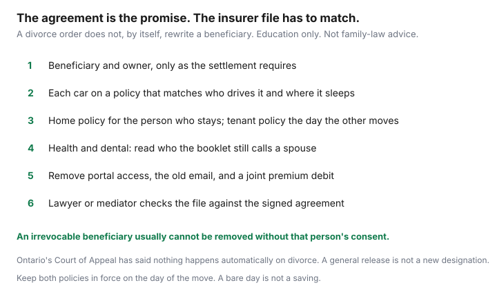

Insurance · Canada
Insurance After Separation or Divorce in Canada: Beneficiaries, Policies, and Shared Vehicles
Separation changes where people live, who drives which car, and who should receive a life insurance cheque. The policies change only when someone tells the insurer. Months later, an ex is still the beneficiary, still a listed driver, and still able to open the online account. This page is the order of the updates: beneficiaries and ownership, vehicles, the home and the new rental, workplace health and dental, portal access, and a checklist a lawyer or mediator can tick against the agreement. It is education. It is not family-law advice, and it does not sell a product.
Disclosure: Education only. This page does not recommend an insurer, a lawyer, a lender, or a claims service. A separation agreement or court order controls the promises in it. The insurer’s records have to be changed to match. Saving Optimizer does not earn a commission from this guide.
Key takeaways
- Change a life insurance beneficiary only in the way the settlement requires, and do it on the insurer’s form. A divorce does not do that job by itself.
- An irrevocable designation usually stays until that beneficiary consents, or a court order the insurer will accept says otherwise.
- Rewrite auto policies when cars and addresses split. Overlap the dates. Remove a driver who has left.
- The person who moves into a rental needs tenant insurance that day. The person who stays needs the home policy and the mortgage clause updated.
- Workplace benefits follow the booklet’s definition of spouse. Read it. Then tell the plan administrator.
- Close shared logins, change the email and phone, and move the premium debit off a joint account.
Change life insurance beneficiaries and ownership when the settlement requires it
A beneficiary designation is its own document. It is not your will, and it is not a line buried in a mutual release. Ontario’s Court of Appeal, in Ferguson Estate v. Mew (2009), said the law that once revoked a spouse’s designation on divorce is gone, and that nothing happens automatically. A former spouse who is still the named beneficiary can be paid. General release language in a separation agreement has been held not to count as a new designation under the Insurance Act. Other provinces are not a photocopy of Ontario. Quebec, in particular, treats designations and marriage contracts under the Civil Code. Ask the lawyer who is already on the file. Do not import an American “divorce revokes the beneficiary” rule.
Do the change the settlement actually requires.
- If you are free to name someone else, sign the insurer’s designation form, name the new beneficiary clearly, and get written confirmation. A will signed the same week does not replace that form.
- If the designation is irrevocable, the insurer will usually refuse a change without the beneficiary’s consent. That consent is a signature, not a text message. Support orders sometimes require an irrevocable designation in favour of a spouse or children. Removing it because the relationship feels over can breach the order.
- If the agreement says a policy must stay in force to secure support, write down the amount, who owns the policy, who pays the premium, and whether the beneficiary is the former spouse, the children, or a trustee. Ownership matters because the owner controls the policy. A beneficiary does not.
- Group life from work often ends when the job ends, and the employer owns the contract. The group-life guide is that limit. A separation agreement that counts on a workplace multiple of salary needs a backup if the job can end. The needs worksheet is how to test the amount. It is not a product pitch.

If you are in immediate danger, call local emergency services. Insurance paperwork can wait until you are safe. This page is the paperwork, not a safety plan.
Split or rewrite auto policies when cars and addresses diverge
A shared auto policy assumes a shared household. Once one person has a new address, the garaging fact is wrong, and a listed driver who no longer lives there is a rating fact you will be asked about after a crash.
- List each vehicle, who will own it, who will drive it, and the postal code where it will sleep.
- Ask the insurer for a policy in the right names at the right address, at the same liability limits you had, before the move. The broker-versus-direct method is a second quote if the current insurer will not write one of the new households. Keep the old policy until the new one is bound.
- Remove the person who moved out from the driver list on a car they will not drive. Add them on the car they took, as principal if the kilometres say so. A friendly “they’re still listed just in case” is how the premium stays wrong and how a claim story gets complicated.
- If a learner or a teen stays with one parent, the teen-driver life event is the notice rule. The teen has to be listed where the car is.
- Tell the insurer about a new commute. Kilometres that described a shared life are stale. The mileage guide is how to write a number you can stand behind.
Home vs tenant transitions during the move-out period
One dwelling often becomes two policies for a while.
- The person who stays needs the home or condo policy in their name, the mortgagee or the corporation still shown correctly, and the ex removed if they are no longer an insured. A claim paid to the wrong name is an avoidable mess. Rebuild cost does not change because a relationship ended. The new-home checklist is the binder habit if the house is also being sold and another one bought.
- The person who leaves needs tenant insurance on the day they get keys to a rental, with liability at the amount the lease asks. The tenant guide is that shopping. Contents in a moving truck are a transit question to ask both insurers. Assume neither policy is eager to cover a week of boxes in a driveway unless you asked.
- An empty house between move-out and a sale can be vacancy. Tell the insurer before the last person leaves. A furnished home one spouse still lives in is not vacant. Say which one is true.
- A rented-out former home is the landlord guide. Owner-occupied wording is the wrong contract once a tenant has keys.
Health/dental benefits: who stays on whose workplace plan
While you are still spouses under both booklets, claims follow the coordination rules on the two-plan guide: order comes from the plan’s status rules, the combined payment cannot exceed the eligible expense, and the birthday rule is a calendar rule. Separation is the moment those rules may stop applying.
Open the booklet and find the definition of spouse, common-law partner, and dependent child. Some plans cover a spouse until the divorce. Some stop at the separation date. Some keep children as dependents regardless, with a different order of payment. Tell the administrator the date in writing and ask for the date coverage for the other adult ends. Do not keep submitting their dental claims after that date. That is a plan problem you do not want.
There is no general Canadian right to stay on an ex-partner’s plan for 18 months. An employer may offer a short extension. The booklet or the administrator’s letter is the offer. A private health plan, if you buy one, is a separate contract with a waiting period you should read before the workplace plan ends. Children do not become uninsured for medically necessary hospital care because a dental plan changed. Provincial coverage is separate from the workplace booklet.
Disable ex-partner online access to insurer portals
Shared passwords are how a polite separation becomes a changed address or a cancelled policy. The week you separate the money:
- Change the email and mobile number on each policy you still own. Insurers send documents and cancellation notices there.
- Turn off another adult’s access in the portal, and remove them as an authorized person on the phone password.
- Move the pre-authorized debit to an account in the policy owner’s name. A joint account that the other person empties is how a policy lapses. Stopping the debit without a new one is also how a policy lapses.
- Ask the insurer to confirm, in writing, who can make changes. You want that list to match the agreement.
Lawyer/mediator checklist so insurance matches the separation agreement
Take this list to the person who is documenting the separation. Tick it only when the insurer’s letter matches the clause.
| Clause | Paper that proves it |
|---|---|
| Life insurance for support | Policy number, owner, amount, beneficiary, irrevocable or not, who pays, and the insurer’s confirmation. A general release is not this row. |
| Policies you may change | The designation form, accepted, with the new beneficiary’s name. |
| Vehicles | Each declarations page: named insured, drivers, garaging address, effective date. No gap between policies. |
| Home and rental | Home policy for the person staying. Tenant policy for the person leaving. Mortgagee still listed. Vacancy disclosed if the house is empty. |
| Health and dental | The administrator’s date for when spousal coverage ends, and who covers the children. |
| Access | Portal, email, phone, and bank debit updated on each contract you still own. |
Put a reminder 45 days before each renewal, in the same sitting as the annual review. The first renewal after a move is when an old address and an old driver quietly return if nobody checked the page.
Sources & date stamps
- Financial Consumer Agency of Canada, life insurance and getting insurance — beneficiary designations are part of the contract you set up. Used 24 Sep 2026.
- Ontario Insurance Act beneficiary provisions, and Ferguson Estate v. Mew, 2009 ONCA 403 — a divorce does not automatically revoke a designation; a general release is not, by itself, a new designation. Confirm the current statute on ontario.ca. Other provinces differ. Quebec follows the Civil Code.
- Workplace spouse definitions and continuation are contractual. Read the booklet. There is no universal Canadian continuation period stated here.
Frequently asked questions
Does divorce automatically remove my ex as life insurance beneficiary?
Do not rely on it. Ontario’s Court of Appeal has said nothing happens automatically on divorce, and a general release in a separation agreement is not a new beneficiary designation. The insurer pays the person on the designation until a valid change is on file. An irrevocable designation usually needs that beneficiary’s consent.
When do we split the car insurance?
When the cars and the addresses diverge. Each vehicle needs a policy that names the person who drives it and the address where it is kept. Remove a driver who has moved out and will not drive the car. Keep both policies in force on moving day so neither vehicle has a gap.
Who needs tenant insurance during the move?
The person who leaves for a rental needs a tenant policy in force the day they take possession. The person who stays needs the home policy in the right name, with the lender still listed. An empty week between those dates is a vacancy question to ask the insurer before the truck comes.
Do workplace health benefits cover an ex?
Only while the booklet’s definition of spouse still includes them. Some plans end at separation. Some end at divorce. Read the definition and tell the administrator the date. There is no Canadian equivalent of a universal continuation right.
Is this legal advice?
No. Education only. A lawyer or mediator in your province has to match the insurance paperwork to the agreement. This page does not sell a policy, a loan, or a claims service.